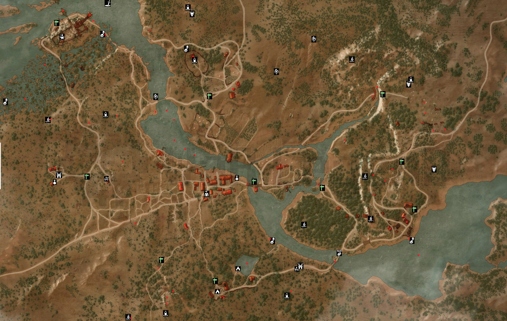

Carte de Blanche Fleur
Blanche Fleur est la première région dans laquelle vous commencez.
Dans celle-ci vous trouverez une quête principle ou vous devez abattre un griffon ainsi qu'une multitude de petite quête annexe.
Danc celle-ci vous aurez l'occasion d'exp et de vous imerger d'avantage dans le lore.
Quête principal de Blanche Fleur